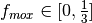

Fast/Thermal Reactor Supply-Based Exchange¶
The primary difference between the request and supply-based cases is that the commodity assignment of assemblies is known, rather than being decided by the outcome of the exchange. The supply-based exchange decides which supporting facilities will receive used fuel.
The levels of fidelity modeled will mirror the request-based case:
| Category | Subcategory |
|---|---|
| Facilities |
|
| Fuel Cycle |
|
| Geospatial |
|
Commodities¶
The same commodities will be used as in the request case.
Facilities¶
Reactors¶
Reactors representing AP-1000 and BN-600-like generating units will be used to determine used fuel supply. In order to simplify the generation of supply, each reactor is assumed to be fueled by its preferred commodity with a randomly chosen initial enrichment.
Parameters¶
: the ratio of thermal reactors to fast reactors
 : the fraction of thermal reactor used fuel that is MOX
: the ratio of Thorium to Plutonium-based fast reactors
Supporting Facilities¶
Four types of supportin facilities will be modeled:
- Thermal Recycle
- Fast MOX Recycle
- Fast ThOX Recycle
- Repository
Constraint Coefficients¶
In the low-fidelity version, each facility type will have a linear conversion constraint
For higher model fideltiy, a heat-generation process constraint is added
Constraint RHS¶
The constraint RHS values will be determined in the same manner as in the request case.
Commodity Preferences¶
Preferences are assigned to facility types based on the fuels they would prefer to process. It is assumed that facilities would prefer to process undesireable fuels over shutting down. Further, it is assumed that any processing facility can process used UOX. Finally, it is assumed that there is a incentive for material to be sent to processing facilities over repositories.
| Facility Type | EUOX | Th MOX | F MOX | F ThOX |
|---|---|---|---|---|
| Thermal Recycle | 1 | 1 | 0.5 | N/A |
| Fast MOX Recycle | 1 | 0.5 | 1 | N/A |
| Fast ThOX Recycle | 1 | N/A | N/A | 1 |
| Repository | 0.1 | 0.1 | 0.1 | 0.1 |
Parameters¶
: the ratio of repositories to other supporting facilities
: the ratio of MOX fast recycle facilities to ThOX fast recycle facilities
Questions¶
- What heat proxy should be used?
- Do preferences match reality? Would every facility want to process UOX?